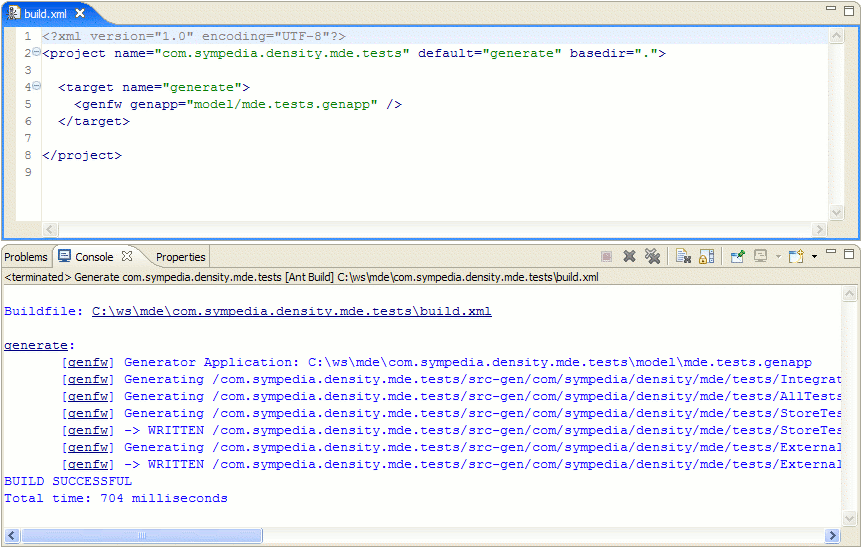

Sympedia GenFw: This picture shows the editor for a reusable Generator Library that contains template definitions, rule sets and rules.

Sympedia GenFw: This picture shows the editor for a project-specific generator configuration. Since most of the elements are reused from the generator library, it is usually small.

Sympedia GenFw: Progress Feedback during generation.

Sympedia GenFw: An Eclipse View that shows all generator config files in the workspace.

Sympedia GenFw: Ant task with reference to a generator config and default trace level.

Density Example: A meta model of a generateable dependency injection container.

Density Example: A meta model of a generateable integration test suite for a Density container.
Density Example: The Density meta model plugins and a JET template for code generation.
Density Example: Some Eclipse views for runtime container introspection.